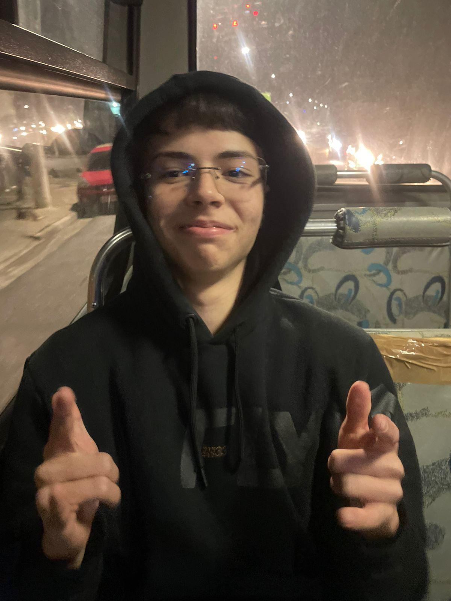
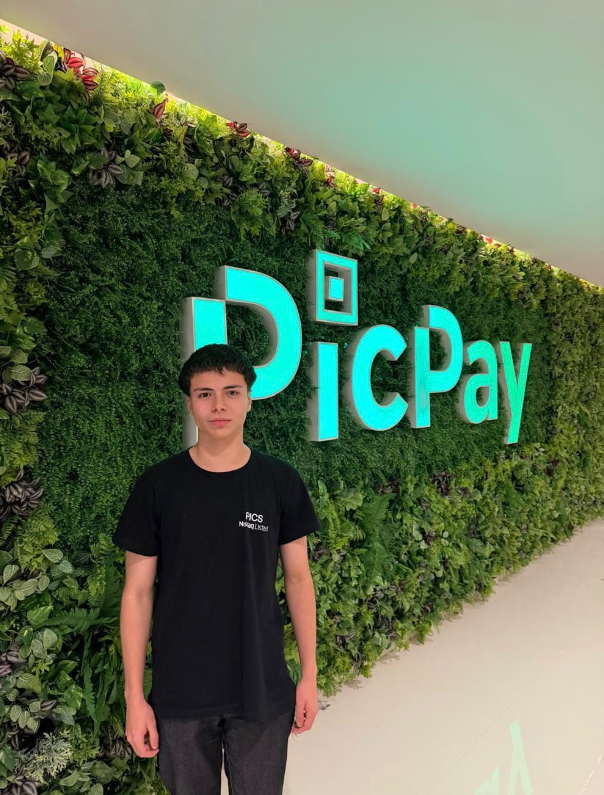
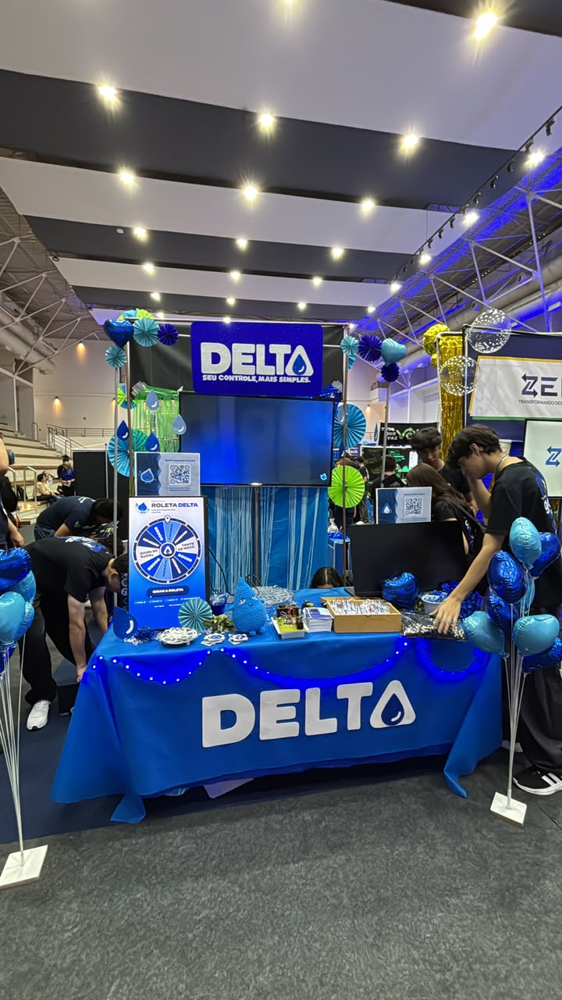
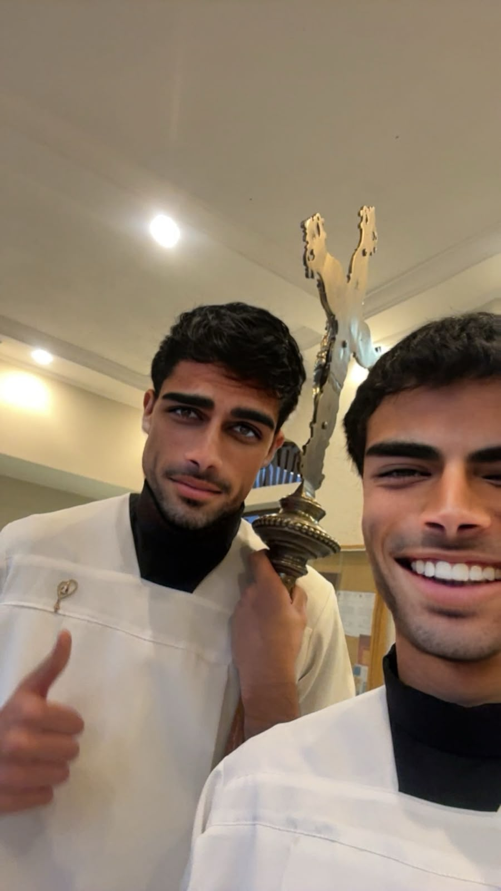

Estudos
Estudo no Instituto J&F, onde aprendo desenvolvimento de sistemas.

Oi, eu sou o Bruno, tenho 16 anos e sou apaixonado por tecnologia.
Estudo no Instituto J&F, onde aprendo desenvolvimento de sistemas.
Sou são-paulino e acompanho o São Paulo Futebol Clube desde pequeno. Também sou fã de UFC, e meus lutadores favoritos são o Conor McGregor e o Ilia Topuria. Gosto de jogar Roblox com minha amiga Manu Dias Velozo.
Trabalho como desenvolvedor back-end na PicPay da Vila Leopoldina, na unidade de Shop.


Projeto escolar interdisciplinar
O Delta é um sistema inteligente de monitoramento e gestão do consumo de água. Sensores instalados em hidrômetros enviam os dados da casa, que são analisados para mostrar o consumo quase em tempo real, encontrar vazamentos e ajudar a reduzir o desperdício. Tudo isso aparece em uma plataforma web e em um aplicativo.
Somos uma equipe de 11 alunos do 1º e do 2º ano, e cada grupo cuida de uma parte do sistema.
Eu sirvo na igreja católica: sou acólito, e gosto muito de servir no ambão.

E no curso Tech, eu gosto muito de todas igualmente.